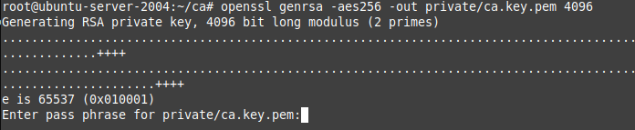
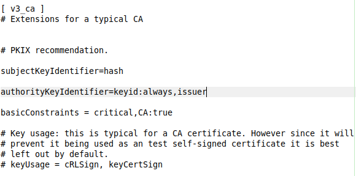
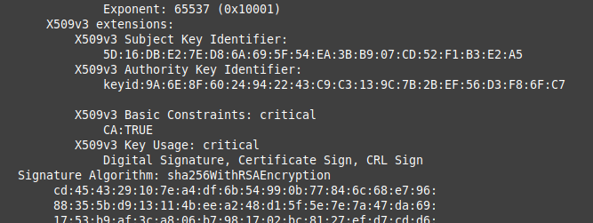

Laboratorio 5. Infraestructura de clave pública propia con OpenSSL
1. Introducción
Una infraestructura de clave pública PKI es una combinación de hardware, software y políticas y procedimientos de seguridad, que permiten la ejecución con garantías de operaciones criptográficas como el cifrado, la firma digital y el no repudio de transacciones electrónicas.
Para el caso de una CA en Linux, hay entidades de pago que podemos consultar (realizar compra de certificados, podemos usar certificados públicos Let’s Encrypt, pero lo que vamos hacer en este laboratorio, es crearnos nuestra propia PKI y ver cómo funciona una CA, una CA intermedia, como revocar certificados, etc..
Con este laboratorio, se tendrá una infraestructura de clave pública (PKI) que aporta la figura de la autoridad certificadora (CA) que es la que, gracias a los certificados, legitima la relación entre los pares de claves y sus propietarios, pasando de unas relaciones de confianzas horizontales (usuario <--> usuario) a otras verticales (usuario --> CA).
2. Recursos y escenario
Recursos necesarios para el laboratorio
- Servidor ubuntu server 20-04.3. Todos los pasos se realizan con el usuario root.
- Paquete openssl (paquete de herramientas criptográficas que implementa los protocolos SSL y TLS). OpenSSL es un paquete de herramientas criptográficas que implementan los protocolos SSL (Secure Socket Layer) y su sucesor TLS (Transport Layer Securtiy). La gran mayoría de servidores (y sitios) web y otras aplicaciones como OpenSSH hacen uso de estas herramientas.
Todos los comandos en el laboratorio se realizan con el usuario root.
Escenario
- Necesidades:
- Se supone que se necesita un certificado firmado para un servidor HTTPS, esto significa que se necesita un certificado para el dominio (o dominios) en los que el servidor estará disponible.
- El navegador web tiene que poder verificar el certificado y decirle al usuario que está accediendo a los servidores correctos del dominio de la URL que escribió y así establecer una conexión segura y privada. Los navegadores utilizan un almacén de certificados que tiene una lista de AC. Este almacén de certificados puede ser propio del navegador (como en el caso de Firefox y sus derivados) o estar integrado con el almacén de certificados del sistema operativo (como en el caso de Chromium y sus derivados).
-
En estos documentos se explica por qué Mozilla decide seguir utilizando su propio almacén de certificados y cómo importar los certificados desde el almacén del sistema operativo si es necesario.
-
Por lo tanto, se necesita un certificado que diga que nuestra clave pertenece a nuestro dominio emitido (firmado) por una de estas entidades. En este laboratorio, los certificados se emitirán desde una CA Intermedia, que no es más que otra entidad que fue autorizada por una de las autoridades competentes para emitir certificados. El procedimiento consiste en enviar una solicitud de firma de certificado (CSR, certificate signing request) a una AC u otra entidad intermedia para que devuelva un certificado que asegure nuestra identidad y que ha firmado con su clave privada.
- La CA raíz/principal a implementar no va a emitir certificados para los usuarios ni servidores, lo que va a emitir es a la CA's intermedias para que ellas sí emitan certificados a usuarios/equipos (servidores).
Los certificados firmados por Let’s Encrypt son gratuitos. Hasta 2021 utiliza un certificado raíz firmado por IdenTrust para firmar los certificados.
3. Procedimiento
3.1 Introducción
Las situaciones en las que se puede necesitar una infraestructura de clave pública propia son variadas. Por ejemplo:
- Un desarrollador web puede querer generar sus propios certificados para sus servidores de desarrollo y prueba antes de desplegar la aplicación en Internet para que sus entornos sean lo más parecidos posible.
- Una empresa quiere mantener bajo control la infraestructura de clave pública para los servidores de su red corporativa, sin necesidad de depender de una autoridad de certificación ajena.
En los siguientes puntos, se describen los pasos a realizar para implantar la PKI y poder emitir y revocar certificados.
3.2 Creando la Autoridad de Certificación: Configurar la CA
Crear una autoridad de certificación propia es extremadamente sencillo y solo necesita de un par de pasos.
Cuando se actúa como una CA, hay que manejar parejas de claves privadas y públicas. AL crear la CA raíz, esta pareja se convierte en la pareja raíz de claves. Vamos a crear la clave privada ca.key.pem y un certificado público ca.cert.pem.
En este laboratorio, se va a montar una CA raíz en un equipo Ubuntu Server 20.04.3 que no va a emitir certificados para servidor y cliente, es decir, creará un certificado raíz X.509 autofirmado para la AC. Será la CA subordinada la encargada de emitir los certificados a los servidores, clientes, etc..
En el mismo equipo servidor, se montará la CA subordinada o intermedia. Tenerlo todo en el mismo servidor no es lo más óptimo, pero para facilitar el trabajo, en este laboratorio se hará toda toda la infraestructura en el mismo servidor.
La estructura a generar será la siguiente:
ca
├── certs
│ └── ca.cert.pem
├── crl
├── index.txt
├── intermedia
│ ├── certs
│ │ ├── ca-cadena.cert.pem
│ │ ├── intermedia.cert.pem
│ │ └── midominio.cert.pem
│ ├── crl
│ │ └── intermedia.crl.pem
│ ├── crlnumber
│ ├── csr
│ │ ├── intermedia.csr.pem
│ │ └── midominio.csr.pem
│ ├── index.txt
│ ├── newcerts
│ │ ├── 1000.pem
│ │ ├── 1001.pem
│ │ └── 1002.pem
│ ├── openssl.cnf
│ ├── private
│ │ ├── intermedia.key.pem
│ │ └── midominio.key.pem
│ ├── serial
├── newcerts
│ └── 1000.pem
├── openssl.cnf
├── private
│ └── ca.key.pem
└── serial
A continuación, se describen los pasos para montar la infraestructura. La estructura que se montará en el sistema es la siguiente:
Paso 1. Preparar los directorios y ficheros necesarios
Entrar en el sistema ubuntu server como root y crear un directorio en /root que se llamará ca. En este directorio se montará toda la infraestructura.
Dentro del directorio /root/ca, hay que crear los siguientes directorios: certs, crl, newcerts y private.
#mkdir certs crl newcerts private
En el directorio private se tendrán las claves privadas, por lo que hay que modificar los permisos para darle todos a root y para el resto nada:
En el directorio crl, se guardarán los certificados revocados.
A continuación, hay que crear en el directorio /root/ca el archivo de la base de datos de certificados emitidos/revocados y el archivo serial que llevará el consecutivo del último certificado firmado. Los archivos son los siguientes:
- index.txt.
- serial (lo creamos con el valor 1000).
A continuación, hay que crear el fichero de configuración de openssl, que es lo que se utiliza en linux para hacer una CA. Existe un fichero en el sistema alojado en /etc/ssl/openssl.conf.
Al cual, hay que realizar una serie de modificaciones/ampliaciones para contextualizarlo a nuestro laboratorio. El fichero modificado es: openssl-plantilla-raiz.cnf.
Luego para la CA intermedia, también hay que realizar una serie de modificaciones de este mismo fichero.
La modificación del fichero se realiza atendiendo a :
- Los días del certificado serán 120.
- El algoritmo utilizado será sha256.
Una crl es una lista de revocación de certificados. Los sistemas suelen trabajar con Ocsp | Certificate Status Checking, pero en este laboratorio, se trabajará con las listas crl.
Creamos en el directorio /root/ca el archivo openssl.cnf y copiamos en él el archivo plantilla openssl-plantilla-raiz.cnf.
Paso 2. Generación de claves
Una vez se tiene todo el sistema preparado para montar la CA, hay que crear la clave privada de la CA raíz.
La CA raíz, es la única que tendrá un certificado autofirmado.
En primer lugar hay que crear el par de claves de la CA, para ello, nos situamos en el directorio /root/ca y ejecutamos el siguiente comando:
#openssl genrsa -aes256 -out private/ca.key.pem 4096

donde,
- openssl genrsa genera claves RSA.
- El tamaño de clave des de 4096 bits.
- La opción -aes256 indica que la clave se debe cifrar utilizando el protocolo aes.
- El fichero de salida ca.key.pem contiene la clave privada.
- Para obtener más información consultar "man openssl-genrsa".
Nos solicita que introduzcamos la contraseña de la clave privada a generar:
Con este proceso, ya se tendía la clave privada:
Se puede inspeccionar la clave utilizando la herramienta openssl rsa (ver man openssl-rsa). Aunque no se debe usar a la ligera, para mostrar la clave privada sería:
#openssl rsa -in ca.key.pem -out -
Para mostrar la parte pública ejecutamos:
#openssl rsa -in ca.key.pem -pubout
Paso 3. Generación del certificado de la CA
A continuación, hay que generar un certificado raíz X.509 autofirmado para la CA raíz. Para ello, hay que emplear la clave privada generada anteriormente, para poder generar el certificado.
En el fichero openssl.cnf hemos puesto el ca.cer.pem que es el que vamos a crear ahora.
#openssl req -config openssl.cnf -key private/ca.key.pem -new x509 -days 8000 -extensions v3_ca -out certs/ca.cert.pem
Explicamos el comando:
- Hacemos una petición (req) utilizando la clave privada y solicitamos un nuevo certificado del tipo x.509 y que dure 8000 (como es una ca principal, ponemos muchos días).
- El parámetro -extensions es para referirnos a una sección del fichero openssl.cnf.
- El parámetro -out se le da una salida al comando (directorio donde se va a guardar el certificado).
- Con el parámetro -config le decimos qué fichero debe usar el comando openssl para crear el certificado, le ponemos el que hemos modificado ajustándolo a nuestro laboratorio, sino lo hacemos, utilizará el fichero que está en el directorio /etc/ssl.

Al ejecutar el comando, nos solicita la clave que hemos utilizado para crear la clave privada.
Una vez introducida la contraseña, nos solicita datos del certificado a crear.
A continuación, visualizamos el fichero generado ca.cert.pem (en el directorio certs) para comprobar el resultado.
Verificar que el certificado es autofirmado
Para verificar que el certificado raíz que se acaba de crear es autofirmado y que coincide con el campo subject, hacemos:
#openssl x509 -noout -text -in /root/ca/certs/ca.cert.pem
Nota: Con el parámetro -noout , no hacemos ninguna salida del comando.
Podemos ver en Issuer que el certificado lo ha creado MI-CA para MI-CA (Autofirmado).
Como se dijo en el capítulo 2. Recursos y escenario, la CA raíz/principal no va a emitir certificados para los usuarios ni servidores, lo que va a emitir es a la CA's intermedias para que ellas sí emitan certificados a usuarios/equipos (servidores).
Paso 4. Crear la estructura de la CA intermedia
Creamos el directorio intermedia dentro de /root/ca.
# mkdir /root/ca/intermedia
A continuación, dentro del directorio intermedia, hay que crear la misma estructura que ya se creó en la CA raíz.
# mkdir certs crl newcerts private csr

A continuación, creamos los archivos index, serial y crlnumber con el valor inicial 1000:
# touch index.txt
# echo 1000 > serial
# echo 1000 > crlnumber
Por último, hay que crear el fichero de configuración. En teoría, esto se debería hacer en otro servidor con el fichero openssl.cnf correspondiente. Para este caso, tendremos otro fichero openssl.cnf en el mismo servidor. Para ello, hacemos una copia del fichero de la CA raíz al directorio intermedia.
A continuación, editamos el fichero openssl.cnf para ajustarlo a esta CA Intermedia. Los cambios a realizar son:
[ CA_default ]
dir = /root/ca/intermedia --> directorio de trabajo
Otras secciones a modificar son el certificado, la lista crl y la key.
certificate = $dir/certs/intermedia.cert.pem
crl = $dir/intermedia.crl.pem
private_key = $dir/private/intermedia.key.pem
Otra sección a modificar es el parámetro policy:
policy = policy_loose
Ahora, se tiene que crear la clave privada intermedia, donde el asistente nos solicitará la contraseña de la clave privada, para ello, ejecutamos el siguiente comando:
#openssl genrsa -aes256 -out private/intermedia.key.pem 4096
donde,
- -aes256. Se cifra la clave privdada con el algoritmo AES de 256 bits. Al ejecutar el comando, nos solicitará la contraseña de cifrado.
- -out. El resultado lo llevamos al fichero intermedia.key.pem
- 4096. Tamaño de la clave privada a generar en bits, en este caso, 4096.
A continuación, hay que crear el certificado intermedio (desde el directorio ca), para ello, se genera el fichero intermedio.csr.pem (csr --> certificate sign request --> Solicitud de firmar un certificado). Ejecutamos el siguiente comando:
#openssl req -config intermedia/openssl.cnf -new -sha256 -key intermedia/private/intermedia.key.pem -out intermedia/csr/intermedia.csr.pem
Al ejecutar el comando, nos solicita la contraseña de la clave privada creada anteriormente y también Nos solicita los datos (como en la ca raíz).
Resumen de lo que se ha realizado hasta el momento:
Se ha creado una petición para crear el certificado, utilizando nuestra clave privada. Esta petición hay que enviarla a la CA raíz para que cree el certificado, ya que esta, es la que crea los certificados de las CA’s intermedias. La CA intermedia, no se va a autogenerar su certificado, lo solicita a la CAR raíz, por eso hemos realizado el csr (solicitud para firmar un certificado).
Ahora vamos a generar el certificado con ese csr que hemos generado. Estando en el directorio /root/ca ejecutamos el siguiente comando:
#openssl ca -config openssl.cnf -extensions v3_ca_intermediate -days 3650 -notext -md sha256 -in intermedia/csr/intermedia.csr.pem -out intermedia/certs/intermedia.cert.pem
donde,
- intermedia.csr.pem --> La que tenemos pendiente.
- La sección v3_ca_intermediate contiene las extensiones a aplicar en la creación de los certificados de CA intermedias.
Al ejecutar el comando, nos solicita la contraseña de la clave privada de la CA principal/raíz.
Si miramos el archivo index.txt, veremos donde se ha almacenado lo que acabamos de hacer.
En este lugar, es donde se van almacenando los certificados que se van generando. Podemos ver los detalles del certificado creado con el siguiente comando:
#openssl x509 -noout -text -in intermedia/certs/intermedia.cert.pem

Podemos ver que el certificado lo ha creado MI-CA (Issuer) para MI-CA Intermedia. También podemos verificarlo contra el certificado raíz para comprobar la cadena de confianza. El comando a ejecutar es el siguiente:
#openssl verify -CAfile certs/ca.cert.pem intermedia/certs/intermedia.cert.pem
Si observamos la imagen superior, vemos que nos devuelve que es correcto (OK). Con esto tenemos la seguridad de que ese certificado lo ha creado nuestra CA root.
Cuando una aplicación intenta verificar un certificado firmado por una CA intermedia (ejemplo ver una página web), se debe de comprobar la cadena de certificación, es decir, certificados intermedios y raíz.
Paso 5. Generar nuestra cadena de certificados intermedios
¿Qué es lo que se hace cuando se monta un apache con certificado? --> Hay que ponerle también los certificados intermedios a ese certificado o configuración de apache.
A continuación, vamos a generar nuestra cadena de certificados intermedios. Estando en el directorio ca, vamos hacer una concatenación para meterlo después en un archivo, el comando es el siguiente:
#cat intermedia/certs/intermedia.cert.pem certs/ca.cert.pem > intermedia/certs/ca-cadena.cert.pem
Este fichero (concatenacion de certificados) que hemos generado es lo que le pasaríamos al servidor apache.
Paso 6. Proceso de firma
A continuación, seguimos con el proceso de firma de certificados de servidor y cliente sobra la estructura PKI que hemos montado. Los certificados que creemos, se pueden utilizar para un servidor web, autenticar a clientes, etc..
Ejemplo: Domino --> midominio.com
Supongamos que un cliente solicita un certificado para un domino, llamado midominio.com. Cuando se solicita un certificado, se necesita una clave asociada al cliente para empezar a firmar todo el proceso. La clave la puede proporcionar el cliente o a través de un intermediario.
Para simplificar el paso, vamos a generar la clave del cliente para poder iniciar el proceso (directamente en nuestro servidor), por lo tanto, vamos a generar una petición csr que luego se firmará y se obtendrá el certificado para el usuario final para mi dominio.com. El comando a ejecutar es el siguiente:
#openssl genrsa -out intermedia/private/midominio.key.pem 2048
- Generamos la clave de 2048 bits.
Con la clave privada que se ha generado, vamos a generar la petición de certificado csr. Los datos que vamos a rellenar en la solicitud son relativos al cliente, para ello ejecutamos el siguiente comando:
#openssl req -config intermedia/openssl.cnf -key intermedia/private/midominio.key.pem -new -sha256 -out intermedia/csr/midominio.csr.pem
Aclaración del comando:
- Creamos un nuevo certificado, donde la petición se hace sobre la ca intermedia (es la que emite los certificados para los clientes, servidores, dominios, etc..).
- El algoritmo de firma es sha256 y con salida intermedia/csr/midominio.csr.pem.
El parámetro FQDN or YOUR name (ver figura superior): Cuando generamos un certificado, es importante que el nombre coincida con lo que se quiere generar para un dominio, como lo queremos generar para el dominio de ejemplo, sería midominio.com. Cuando se compra un certificado, hay que comprobar que el FQDN sea el nombre de nuestro dominio. Una vez que se genera ya no se puede cambiar, habría que comprar otro.
Ya tenemos el csr y ahora lo que haremos es enviar el csr a nuestra CA intermedia para que lo firme y así obtener el certificado.
Si es un certificado para servidores utilizaremos una extensión para servidor, si es para usuario la extensión de usuario. Todo esto son campos/parámetros dentro del fichero openssl.cnf.
Cuando se hace un certificado para un dominio, el valor del tiempo suele ser generalmente de 1 año (consultar cual es el periodo máximo de validez que se deja para un certificado).
Introducimos en la consola 'y' para firmar y de nuevo 'y' después para hacer el commit.
Si comprobamos el contenido de la CA intermedia, veremos que se ha actualizado con lo que acabamos de realizar, es decir, el certificado que acabamos de generar.
#cat intermedia/index.txt

Podemos verificar mediante el campo issuer y el subject, para ello ejecutamos el siguiente comando:
#openssl x509 -noout -text -in intermedia/certs/midominio.cert.pem
Issuer --> Quien ha realizado el certificado no es CA raíz sino MI_CA Intermedia y se ha generado para midominio.com.
También podemos verificar la cadena de confianza ¿Cómo lo harías?. Resuelve esta cuestión y comenta el resultado.
Paso 7. Comprobaciones
A continuación, hay que comprobar que el certificado se corresponde o ha sido generado por la CA Intermedia y además se comprueba toda la cadena de confianza.
Ejecutamos el siguiente comando:
#openssl verify -CAfile intermedia/certs/ca-cadena.cert.pem intermedia/certs/midominio.cert.pem
Si observamos la imagen superior, vemos que nos da un OK por lo que el certificado se corresponde o ha sido generado por mi CA Intermedia y se comprueba toda la cadena de confianza.
Cuando se haga uso de este certificado en un servidor web, tenemos que emplear los 3 archivos:
- ca-cadena.cert.pem → /intermedia/certs/
- midomino.key.pem → intermedia/private/
- midominio.cert.pem → intermedia/certs/
Paso 8. Revocación de Certificados
Ahora, vamos a probar a revocar un certificado mediante las listas de revocación de certificado. Es una lista donde se van a almacenar los certificados revocados por la CA. Cuando un navegador intenta comprobar la autenticidad del servidor, consulta esa lista para determinar si está revocado o no.
En el caso de una conexión VPN, un empleado con un certificado revocado implica la pérdida de servicio.
La lista se suele publicar en una url pública y sencilla, ejemplo:
Esta url suele estar visible en los certificados (si miramos en la propiedades del certificado). Cuando una CA firma un certificado, codifica esa url dentro del certificado, y se puede configurar con varios parámetros. Si observamos el fichero openssl.cnf podemos ver los parámetros que nos permiten configurar es url.
Para este laboratorio, usaremos los valores de los parámetros por defecto (no modificaremos ninguno).

1. En primer lugar, vamos a crear la lista para la CA Intermedia. El comando es el siguiente:
#openssl ca -config intermedia/openssl.cnf -gencrl -out intermedia/crl/intermedia.crl.pem
Usamos el fichero openssl.cnf de la CA intermedia para generar la lista de revocación que guardaremos en el directorio crl de la CA intermedia.
A continuación, vamos a comprobar la lista de certificados revocados para ver lo que contiene. El comando a ejecutar es el siguiente:
#openssl crl -in intermedia/crl/intermedia.crl.pem -noout -text
Si observamos la imagen superior, tenemos que:
- issuer→ La lista está realizada por MI-CA Intermedia.
- Nos dice cuando fue la última vez que se actualizó (19 de Agosto) y la próxima vez que se actualizará (18 septiembre).
- Nos dice que no tenemos ningún certificado revocado (No Revoked Certificates).
Si se revoca un certificado por ejemplo, dentro de dos días (21 de Agosto), la próxima actualización de la lista como es del 18 de Septiembre, el certificado se podría seguir utilizando ya que la revocación del mismo no está incluido en la lista hasta que se haga la actualización (18 de Septiembre). Este problema la única forma de solucionarlo es con el protocolo OCSP.
2. Procedemos a revocar el certificado que se ha generado anteriormente.

Lo que hace es, se va al fichero index.txt y revoca el certificado (1000) que corresponde a midominio.cert.pem
La línea sigue existiendo, no se elimina. Revocar un certificado no significa eliminar el registro del fichero, pero hay una cosa diferente respecto de su contenido antes de ejecutar el comando de revocación, ahora al principio del registro hay una R (revoked) en lugar de una V (valid). Esa R identifica el certificado como revocado.
En cuanto a la lista de certificados, si ejecutamos el comando para ver la lista:
#openssl crl -in intermedia/crl/intermedia.crl.pem -noout -text
Nos dice que no hay certificados revocados, ¡pero acabamos de revocar uno!. Esto es debido a lo que se ha comentado en la Nnota anterior, hasta que no se actualice la lista, el certificado que acabamos de revocar no se consolida en la lista.
Hay una forma de que sí se consolide y es regenerar la lista manualmente. Para ello, el comando a utilizar es el siguiente (Comando utilizado anteriormente para generar la lista):
#openssl ca -config intermedia/openssl.cnf -gencrl -out intermedia/crl/intermedia.crl.pem
A continuación, comprobamos la lista de certificados revocados.
#openssl crl -in intermedia/crl/intermedia.crl.pem -noout -text
Ahora sí se tiene consolidado la revocación del certificado → Revoked Certificates: Serial Number: 1000 con fecha → Revocation Date: Aug 19 11:17:13 2021 GMT.
En una página web no es muy importante que el certificado se revoque cuando se haga la actualización automática, pero si estamos hablando de un certificado de una persona que ha sido sustraído y que podrían firmar, etc.., pues en ese caso, sí que es necesario generar la lista de certificados revocados de manera manual.
4. Conclusión
Hemos visto todo lo referente a la creación de una PKI con Linux con una ca raíz y una ca intermedia.
Obra publicada con Licencia Creative Commons Reconocimiento No comercial Compartir igual 4.0